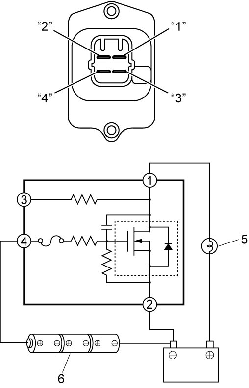

7B
| Blower Motor Controller Inspection |
1)Check internal circuit of controller for resistance as follows.
a)Measure resistance between terminals “2” and “4” of blower motor controller.
If check result is not as specified, replace blower motor controller.
Blower motor controller resistance
“2” – “4”: approximately 10 kΩ at 25 °C (77 °F)
b)Connect positive (+) terminal of an ohmmeter to terminal “1” of blower motor controller and negative (–) terminal to terminal “2” of the controller. The result should indicate no continuity.
2)Check controller for operation as follows.
a)Using bulb (3.4 W) (5) and service wire, connect battery positive (+) terminal to terminal “1” of blower motor controller as shown in figure.
b)Using service wire, connect battery negative (–) terminal to terminal “2” of blower motor controller.
c)Arrange 3 new 1.5 V batteries (6) in series (check that total voltage is 4.5 – 5.0 V) and connect its positive (+) terminal to terminal “4” of blower motor controller and negative (–) terminal to terminal “2” of the controller.
The bulb should light. If bulb does not light, replace blower motor controller.

The bulb should light. If bulb does not light, replace blower motor controller.

 "Expand image")